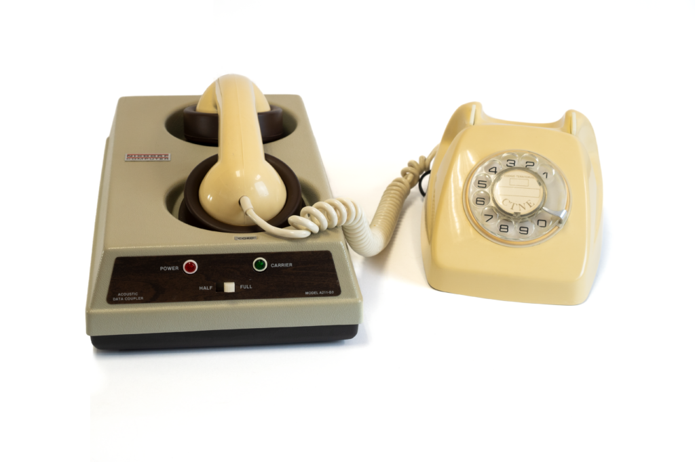
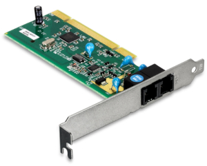
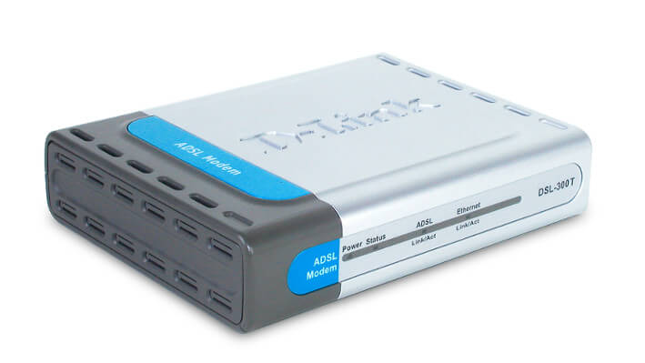
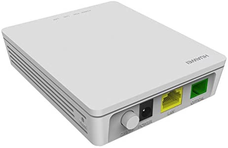

Tudo sobre Redes Parte 15
Evolução da Internet
A história da internet discada até a DSL, resumidamente é isso:
- Anos 1970 e 1980 (Acopladores Acústicos): A conexão com os computadores nessa época era feita ligando pra um provedor e colocando o próprio monofone do telefone fixo sobre uma base que ouvia e emitia sons (bipes e chiados) que eram traduzidos pra dados e vice-versa.
- Anos 1990 (Internet Discada): O computador usava um modem para ligar para um provedor pela linha telefônica. Era lenta (até cerca de 56 kbps) e deixava o telefone ocupado durante a conexão.
- Final dos Anos 1990 e Anos 2000 (Chegada da DSL/ADSL): A internet passou a usar frequências diferentes na linha telefônica, permitindo navegar e fazer ligações simultaneamente. Era muito mais rápida e podia ficar conectada continuamente.
- Anos 2000 (Popularização da Banda Larga): Serviços como Speedy e Velox se expandiram no Brasil. Em muitos planos, ainda era necessário contratar um provedor separado, além da operadora telefônica, com o tempo, essa contratação deixou de ser necessária.
- Anos 2010 em Diante (Fibra Óptica): A fibra começou a substituir gradualmente tecnologias antigas, oferecendo velocidades muito maiores e conexões mais estáveis.
A grande evolução: Saímos de uma internet que precisava ligar para se conectar, ocupando o telefone, para uma conexão permanente, rápida e, atualmente, muito mais veloz com a fibra óptica.
Veja a imagem de um antigo acoplador acústico:

A de uma antiga placa de fax-modem:

A de um modem DSL:

E a de um ONT de fibra:

Já a evolução das redes móveis aconteceu em gerações, cada uma trazendo mais velocidade, capacidade e novos recursos:
- 1G (anos 1980): Transmissão de voz analógica, apenas chamadas telefônicas.
- 2G (anos 1990): Voz digital, SMS e maior segurança nas comunicações.
- 3G (anos 2000): Acesso à internet móvel, navegação e videochamadas.
- 4G (anos 2010): Internet de alta velocidade, streaming de vídeos e melhor experiência em aplicativos.
- 5G (anos 2020): Velocidades muito maiores, menor latência e conexão simultânea de muitos dispositivos, favorecendo IoT, carros conectados e automação.
Resumindo: a evolução foi da comunicação por voz (1G) para mensagens (2G), internet móvel (3G), banda larga móvel (4G) e conectividade avançada em tempo real (5G).